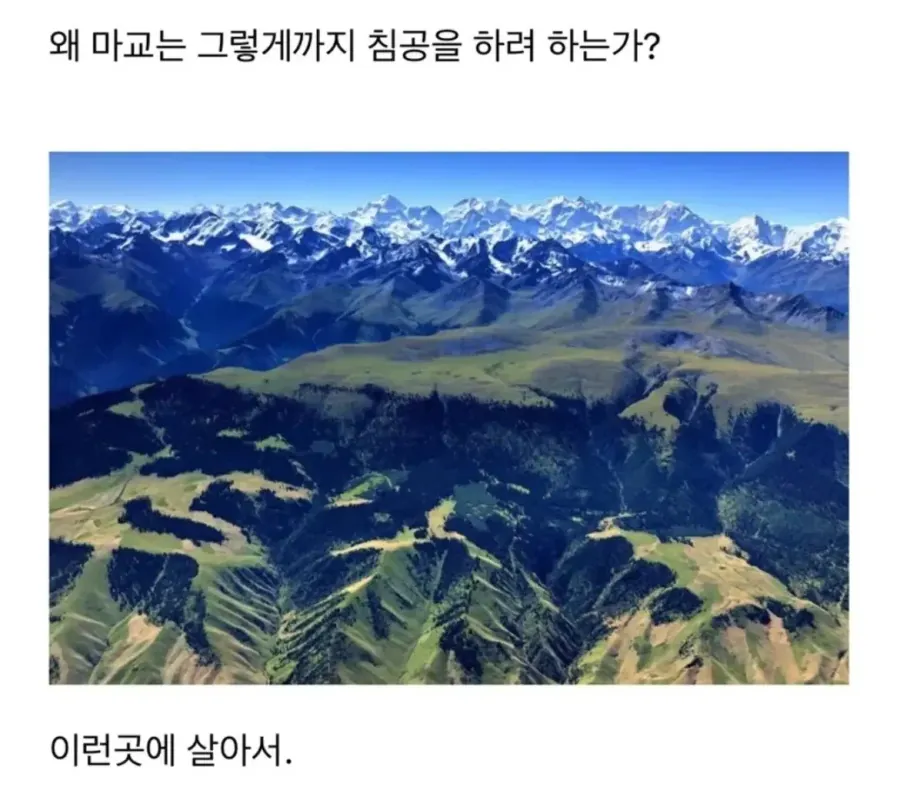
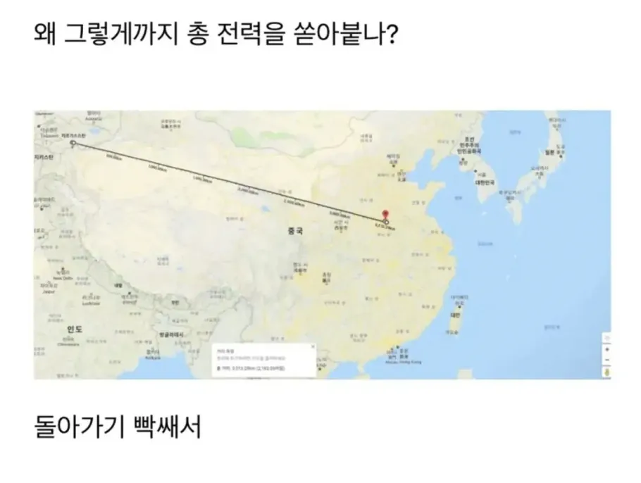
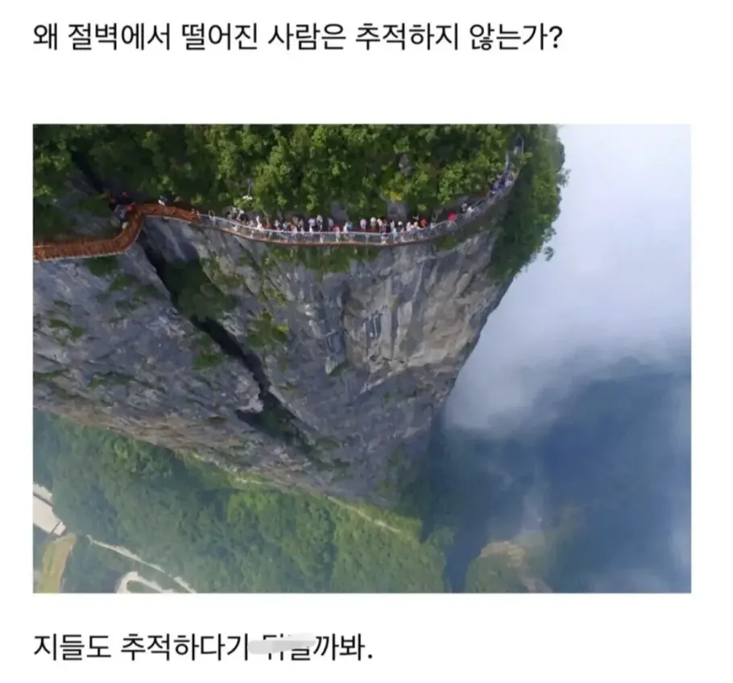
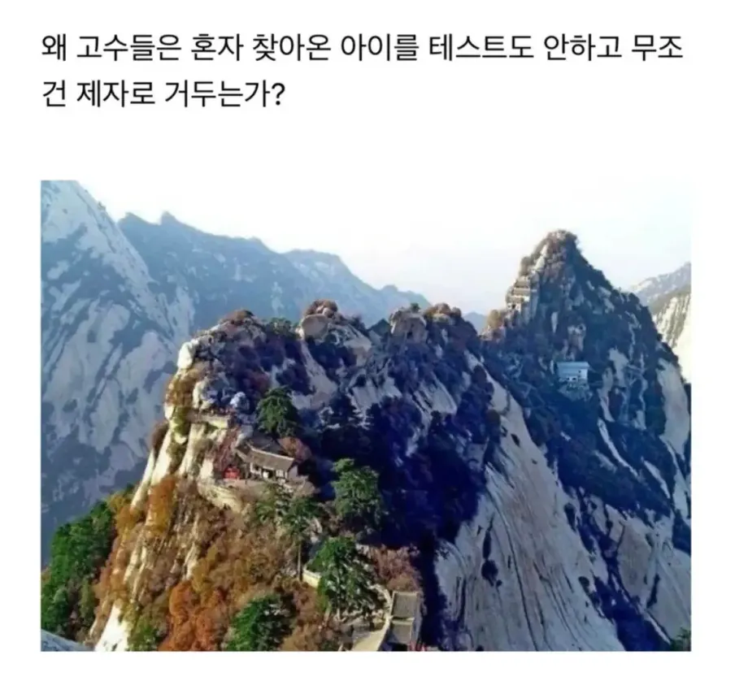
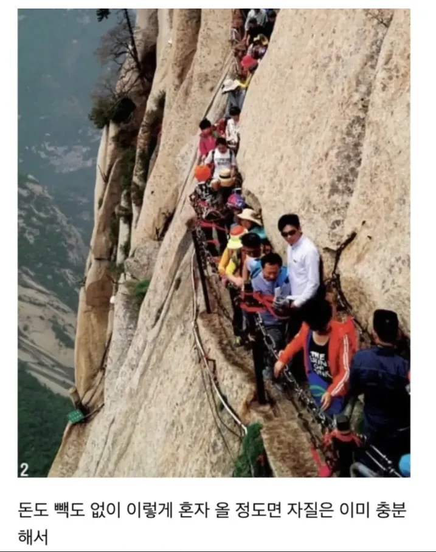

???: 저 컵을 맞춰보거라!
파이어 애로우!
??? : 화산파의 화 는 불 화 자를 쓰오…
컵?????
??? : 자! ㅈ
자! 질을 테스트해주마
자지!를 테스트 해주마
자! 질을 테스트해주마!
나는 천옥을 삼키고 곧장 아래로 뛰어내렸으나 곧장 마교 수하 몇 놈이 따라서 뛰어내렸다. 마교 교주의 명령에 따라 저 절벽에서 뛰어내리는 놈들은 정말로 미친놈들인 것이다. 그와중에 저 광명좌사놈은 뛰어내리지 않고 그저 지켜만 볼 뿐이었다..
광마회귀를 완독한 사람, 그게 바로 나다!!!
확인
확인
생각해보니 가끔 화산파 정문에 아이 버리는 어머니들 나오잖아 개씹고수였네..
'버려진 아이의 어미가 남기고 갔을 흔적은 전혀 보이지 않았다'
모계가 개쩌는 피지컬을 가졌으니 일단 키워볼만함
??? : 자질을 테스트해주마!